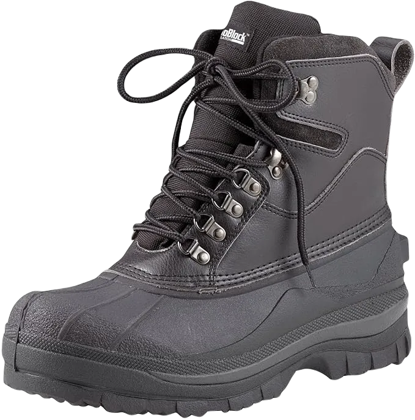

Top 10 Best Cold Weather Hunting Boots for Winter 2024
To talk about Best Cold Weather Hunting Boots for Winter there are many type of shoes that are made by good martial and have best things to be used by making. We talk about Shoes that are good for winter and can help to control cold to protect your feet. It is important to talk about these kind of shoes because in winter season people need to take care of their feet to work on.
As we are talking about Shoes then we need to care about some safety issues that are good to save you from things and these boots that we are going to choose for you to wear are best to wear in this part. These are good in features, material and water proof ability that are good to give you a best sole that are secure for your feet.
-
#1
Irish setter men’s havoc xtWP 1000 gram
When discussing shoes designed for both work and hunting, it’s important to highlight footwear that excels in both material quality and functional features. These shoes are crafted for superior performance, offering exceptional comfort and warmth, setting them apart from other options in the market. Their sleek design, made from high-quality leather, not only provides a stylish look but also ensures the comfort you need, especially during demanding activities like hunting. The leather's durability and flexibility enhance the overall experience, giving you the confidence that your feet are well-protected and supported.
Additionally, the shoes are designed with advanced inner and outer soles, carefully engineered to provide maximum support and comfort throughout the day. The ergonomic design of the soles helps distribute weight evenly, reducing the risk of foot or back pain, even after extended periods of wear. Hunters often encounter uneven and slippery surfaces, and these shoes are specifically made to provide excellent traction and stability. -
#2
Rocky men’s blizzard stalker pro
When considering shoes, it's essential to take a closer look at the features they offer. These particular shoes stand out for their lightweight design, allowing you to move more swiftly and effortlessly compared to other options. They provide exceptional protection, especially with their padded collar, which adds warmth and helps keep your feet dry in challenging conditions. In the context of hunting, where foot protection is crucial, these shoes excel in safeguarding your feet and ensuring they remain comfortable throughout.
These shoes come equipped with multiple features that make them highly functional and comfortable. The inner and outer soles are designed with rubber elements, enhancing grip and cushioning, which results in superior comfort during extended wear. Moreover, these shoes are not only high-performing but also come at an affordable price, making them a great investment. Whether you're navigating cold weather or rugged hunting environments, they provide a soft and comfortable feel, ensuring you stay light on your feet while maintaining the durability needed for tough conditions. -
#3
Irish setter men’s gunflint
Boots are essential for providing comfort and protection, especially when you're out hunting or navigating wet conditions. These waterproof shoes are designed to shield your feet from water and keep them dry, ensuring maximum comfort throughout your activities. They are specifically crafted with features that enhance both performance and convenience, making them a reliable choice for anyone looking to improve their outdoor experience.
One of the standout features of these boots is their advanced insole technology, which includes shock-absorbing properties. This ensures that your feet are protected from the impact of rough terrain, providing you with excellent support and cushioning. We prioritize your needs, and we’ve designed these shoes with your preferences in mind.
These boots excel in cold, icy environments, offering reliable traction to prevent slipping, even on slick surfaces. They won’t let you down in slippery conditions and are flexible yet durable, ensuring your feet stay warm and dry no matter the weather or terrain. The combination of these features makes them the perfect choice for anyone seeking a versatile, long-lasting pair of boots that performs well in all kinds of outdoor situations. -
#4
Lacrosse men’s alpha burly pro
There are countless products available to assist you in various ways, but shoes remain one of the best choices for foot protection. These particular shoes excel at keeping your feet warm and dry, offering a waterproof design that ensures you stay comfortable even in wet conditions. In addition to being waterproof, they come equipped with features that enhance flexibility and comfort, making them ideal for those using them in hunting or navigating through damp environments.
The shoes are highly adjustable, designed to provide a secure fit without causing discomfort. Their durable construction highlights the importance of both the inner and outer soles, which play a key role in providing comfort and preventing slips. This combination of durability and slip-resistance ensures maximum protection and ease of movement, making these shoes a reliable choice for any outdoor activity. -
#5
Rotcho 8 cold weather
When discussing shoes, it's important to focus on the key aspects that make them a great choice for your needs. These shoes offer a unique level of comfort and protection, designed to shield your feet from harmful elements. Crafted from high-quality leather, they feature both a sturdy upper and lower layer, providing excellent water resistance. Whether you're walking through wet areas or across damp leaves, these shoes are engineered to keep your feet dry and comfortable. The design also includes a removable insole that offers enhanced support, ensuring your feet stay cushioned and well-protected throughout wear.
One of the standout features of these shoes is their lightweight construction, which makes them incredibly easy to wear without sacrificing performance. This lightness not only enhances comfort but also allows your feet to stay cool while providing warmth in colder conditions.
With these features combined, these shoes offer the perfect balance of flexibility, protection, and comfort, making them an ideal choice for anyone looking for reliable footwear that performs well in various conditions. -
#6
Kamik men’s hunter cold weather shoes
Hunting enthusiasts will appreciate these shoes, designed specifically to provide both comfort and safety during outdoor activities. Their lightweight construction allows for quick and easy movement, making them ideal for fast-paced environments like hunting. Additionally, these shoes offer excellent warmth, ensuring your feet stay cozy even in cold weather, allowing you to fully enjoy your experience without discomfort.
Equipped with waterproof and resistance features, these shoes stand out for their practical design and stylish appeal, catering to the needs of those who value both functionality and fashion. The inner and outer soles are carefully crafted to provide smoothness and exceptional comfort, ensuring your feet stay supported throughout the day. Since the feet are one of the most important parts of the body when it comes to mobility and comfort, these shoes are designed to offer the ultimate in protection, cushioning, and flexibility, keeping you comfortable in any situation. -
#7
Columbia men’s bugaboot
These boots offer exceptional comfort, making them perfect for people who enjoy staying active. Designed with a great shape, they provide warmth and protect your feet from harmful elements. Their durable construction focuses on key areas, such as the high-quality leather upper, which helps keep your feet warm and shields them from the cold, ensuring maximum comfort.
Not only do these boots excel in functionality, but they also feature a stylish design that complements any outfit. The tall structure offers excellent coverage, and the inner sole provides ample support, ensuring your feet stay protected and warm in cold weather. With an easy-to-wear design, you can slip them on without needing assistance, making them both convenient and practical.
These boots are engineered to generate and retain heat, providing relief from the cold with the help of extra materials installed in the inner sole. Their superior comfort and enhanced protection make them stand out from other options. For those seeking boots that combine style, warmth, and durability, these are the perfect choice, offering everything you need for both comfort and protection. -
#8
Danner men’s pronghorn 8 1200G Gore
For those who love hunting, it's essential to have the right footwear, and these shoes are designed with top-tier features to meet the demands of outdoor activities. Crafted with a premium leather layer, they offer excellent protection against cold weather, ensuring your feet stay warm even in harsh conditions. Their lightweight construction makes them easy to wear, while their ability to keep your feet dry in wet environments sets them apart as a high-performance option.
These shoes also boast breathability, ensuring you don't have to worry about sweating during long wear. In addition, their extreme waterproof capabilities provide the protection every hunter needs, keeping your feet safe and dry. This feature is a must-have for those who frequently encounter water or damp areas during their activities.
Both the outsole and insole are expertly designed to deliver comfort and protection, ensuring that you can move smoothly without encountering any discomfort. The durable construction is perfect for withstanding rough, cold environments, providing excellent grip and support. With their high-quality leather and durability, these shoes are put through rigorous testing to ensure they perform at their best, making them a reliable choice for all your outdoor needs. -
#9
Bogs men’s classic high camo
Boots are essential for those living in cold climates and who enjoy hunting, and these particular shoes are designed with excellent features to ensure comfort and performance. Ideal for hunting, these boots effectively repel water, keeping your feet warm and dry in harsh conditions.
The shoes offer superior shock resistance and stability, thanks to their dual-layered sole that provides enhanced protection against falls. Additionally, they feature a removable sock liner that excels at moisture absorption, helping to keep your feet dry and comfortable by removing sweat.
For adventure enthusiasts, these boots are an excellent choice, providing reliable warmth and protection in cold weather. Their advanced features ensure you stay comfortable and safe, making them a top pick for anyone seeking dependable footwear for outdoor activities. -
#10
Muck boot woody max
These long boots are designed to offer a wide range of features and capabilities, making your adventures more enjoyable and comfortable. They are specifically crafted to protect your feet from the cold while providing warmth and insulation. With excellent floor grip, these boots help prevent slips and falls, ensuring you can navigate various terrains safely.
The flexibility of these boots, combined with their high-quality upper layer, makes them ideal for hunting and other outdoor activities. They offer ample support and stretch to keep you comfortable during extended wear, maintaining your comfort zone throughout your adventures.
Additionally, their waterproof capabilities ensure that your feet stay warm and dry, even in wet conditions. These boots are crafted to address all potential issues that might arise during hunting, providing the protection and comfort you need. Their ability to keep unwanted elements at bay makes them a top choice for anyone seeking reliable and effective footwear.